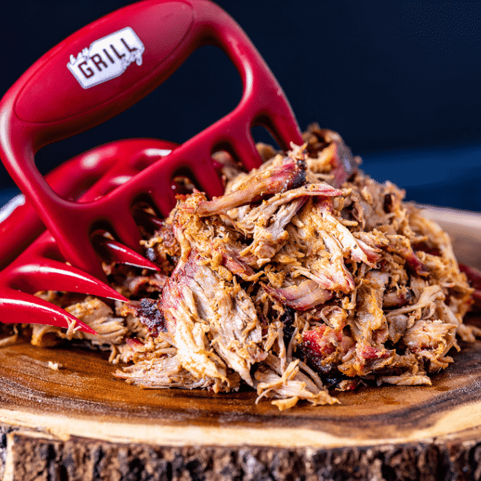

Pulled Pork

This is my favorite way to prepare some delicious pulled pork!
Ingredients
- Boston Butt
- Bad Byron's BBQ Butt Rub
- Apple Juice
- Salt and Pepper
Steps
- Trim some of the fat off of the butt.
- Season all sides of the butt and let sit for 30 minutes.
- Place butt on grill at 275 degrees.
- After 2 hours in, spritz the butt with apple juice and water.
- After 2 more hours, spritz again.
- 4 hours in, wrap the butt up in aluminum foil after seasoning and place back on grill.
- After 3-3.5 hours later (7.5 hours total) take the butt and let sit for 30 minutes to an hour and enjoy!